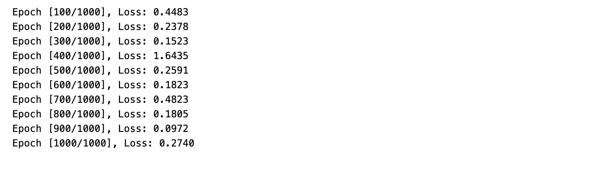

Understanding Deep Learning : Lab 4#
Linear Regression with a Regression Dataset
#
In this activity, we applied linear regression using PyTorch on the real-world Diabetes dataset from scikit-learn. We began by loading and normalizing the input features, then converted the data into PyTorch tensors and created a DataLoader for mini-batch training. Next, we defined a Linear Regression model using a single fully connected layer, trained it with Mean Squared Error (MSE) loss and Stochastic Gradient Descent (SGD), and monitored the training loss over multiple epochs. Finally, we tested the model by comparing its predicted output with the actual target value to evaluate its learning performance.
Here is the given problem setup:

IMPLEMENTION#
# ============================
# 1. Import Libraries
# ============================
import numpy as np
import torch
import torch.nn as nn
from torch.utils.data import TensorDataset, DataLoader
from sklearn.datasets import fetch_california_housing
from sklearn.preprocessing import StandardScaler
import matplotlib.pyplot as plt
from sklearn.metrics import mean_squared_error, r2_score
# ============================
# 2. Load and Preprocess Dataset
# ============================
# Load dataset
data = fetch_california_housing()
X, y = data.data, data.target
/Library/Frameworks/Python.framework/Versions/3.13/lib/python3.13/site-packages/sklearn/datasets/_base.py:1518: UserWarning: Retry downloading from url: https://ndownloader.figshare.com/files/5976036
warnings.warn(f"Retry downloading from url: {remote.url}")
---------------------------------------------------------------------------
SSLCertVerificationError Traceback (most recent call last)
File /Library/Frameworks/Python.framework/Versions/3.13/lib/python3.13/urllib/request.py:1319, in AbstractHTTPHandler.do_open(self, http_class, req, **http_conn_args)
1318 try:
-> 1319 h.request(req.get_method(), req.selector, req.data, headers,
1320 encode_chunked=req.has_header('Transfer-encoding'))
1321 except OSError as err: # timeout error
File /Library/Frameworks/Python.framework/Versions/3.13/lib/python3.13/http/client.py:1338, in HTTPConnection.request(self, method, url, body, headers, encode_chunked)
1337 """Send a complete request to the server."""
-> 1338 self._send_request(method, url, body, headers, encode_chunked)
File /Library/Frameworks/Python.framework/Versions/3.13/lib/python3.13/http/client.py:1384, in HTTPConnection._send_request(self, method, url, body, headers, encode_chunked)
1383 body = _encode(body, 'body')
-> 1384 self.endheaders(body, encode_chunked=encode_chunked)
File /Library/Frameworks/Python.framework/Versions/3.13/lib/python3.13/http/client.py:1333, in HTTPConnection.endheaders(self, message_body, encode_chunked)
1332 raise CannotSendHeader()
-> 1333 self._send_output(message_body, encode_chunked=encode_chunked)
File /Library/Frameworks/Python.framework/Versions/3.13/lib/python3.13/http/client.py:1093, in HTTPConnection._send_output(self, message_body, encode_chunked)
1092 del self._buffer[:]
-> 1093 self.send(msg)
1095 if message_body is not None:
1096
1097 # create a consistent interface to message_body
File /Library/Frameworks/Python.framework/Versions/3.13/lib/python3.13/http/client.py:1037, in HTTPConnection.send(self, data)
1036 if self.auto_open:
-> 1037 self.connect()
1038 else:
File /Library/Frameworks/Python.framework/Versions/3.13/lib/python3.13/http/client.py:1479, in HTTPSConnection.connect(self)
1477 server_hostname = self.host
-> 1479 self.sock = self._context.wrap_socket(self.sock,
1480 server_hostname=server_hostname)
File /Library/Frameworks/Python.framework/Versions/3.13/lib/python3.13/ssl.py:455, in SSLContext.wrap_socket(self, sock, server_side, do_handshake_on_connect, suppress_ragged_eofs, server_hostname, session)
449 def wrap_socket(self, sock, server_side=False,
450 do_handshake_on_connect=True,
451 suppress_ragged_eofs=True,
452 server_hostname=None, session=None):
453 # SSLSocket class handles server_hostname encoding before it calls
454 # ctx._wrap_socket()
--> 455 return self.sslsocket_class._create(
456 sock=sock,
457 server_side=server_side,
458 do_handshake_on_connect=do_handshake_on_connect,
459 suppress_ragged_eofs=suppress_ragged_eofs,
460 server_hostname=server_hostname,
461 context=self,
462 session=session
463 )
File /Library/Frameworks/Python.framework/Versions/3.13/lib/python3.13/ssl.py:1076, in SSLSocket._create(cls, sock, server_side, do_handshake_on_connect, suppress_ragged_eofs, server_hostname, context, session)
1075 raise ValueError("do_handshake_on_connect should not be specified for non-blocking sockets")
-> 1076 self.do_handshake()
1077 except:
File /Library/Frameworks/Python.framework/Versions/3.13/lib/python3.13/ssl.py:1372, in SSLSocket.do_handshake(self, block)
1371 self.settimeout(None)
-> 1372 self._sslobj.do_handshake()
1373 finally:
SSLCertVerificationError: [SSL: CERTIFICATE_VERIFY_FAILED] certificate verify failed: unable to get local issuer certificate (_ssl.c:1032)
During handling of the above exception, another exception occurred:
URLError Traceback (most recent call last)
Cell In[2], line 7
1 # ============================
2 # 2. Load and Preprocess Dataset
3 # ============================
4
5
6 # Load dataset
----> 7 data = fetch_california_housing()
8 X, y = data.data, data.target
File /Library/Frameworks/Python.framework/Versions/3.13/lib/python3.13/site-packages/sklearn/utils/_param_validation.py:218, in validate_params.<locals>.decorator.<locals>.wrapper(*args, **kwargs)
212 try:
213 with config_context(
214 skip_parameter_validation=(
215 prefer_skip_nested_validation or global_skip_validation
216 )
217 ):
--> 218 return func(*args, **kwargs)
219 except InvalidParameterError as e:
220 # When the function is just a wrapper around an estimator, we allow
221 # the function to delegate validation to the estimator, but we replace
222 # the name of the estimator by the name of the function in the error
223 # message to avoid confusion.
224 msg = re.sub(
225 r"parameter of \w+ must be",
226 f"parameter of {func.__qualname__} must be",
227 str(e),
228 )
File /Library/Frameworks/Python.framework/Versions/3.13/lib/python3.13/site-packages/sklearn/datasets/_california_housing.py:177, in fetch_california_housing(data_home, download_if_missing, return_X_y, as_frame, n_retries, delay)
171 raise OSError("Data not found and `download_if_missing` is False")
173 logger.info(
174 "Downloading Cal. housing from {} to {}".format(ARCHIVE.url, data_home)
175 )
--> 177 archive_path = _fetch_remote(
178 ARCHIVE,
179 dirname=data_home,
180 n_retries=n_retries,
181 delay=delay,
182 )
184 with tarfile.open(mode="r:gz", name=archive_path) as f:
185 cal_housing = np.loadtxt(
186 f.extractfile("CaliforniaHousing/cal_housing.data"), delimiter=","
187 )
File /Library/Frameworks/Python.framework/Versions/3.13/lib/python3.13/site-packages/sklearn/datasets/_base.py:1512, in _fetch_remote(remote, dirname, n_retries, delay)
1510 while True:
1511 try:
-> 1512 urlretrieve(remote.url, temp_file_path)
1513 break
1514 except (URLError, TimeoutError):
File /Library/Frameworks/Python.framework/Versions/3.13/lib/python3.13/urllib/request.py:214, in urlretrieve(url, filename, reporthook, data)
197 """
198 Retrieve a URL into a temporary location on disk.
199
(...) 210 data file as well as the resulting HTTPMessage object.
211 """
212 url_type, path = _splittype(url)
--> 214 with contextlib.closing(urlopen(url, data)) as fp:
215 headers = fp.info()
217 # Just return the local path and the "headers" for file://
218 # URLs. No sense in performing a copy unless requested.
File /Library/Frameworks/Python.framework/Versions/3.13/lib/python3.13/urllib/request.py:189, in urlopen(url, data, timeout, context)
187 else:
188 opener = _opener
--> 189 return opener.open(url, data, timeout)
File /Library/Frameworks/Python.framework/Versions/3.13/lib/python3.13/urllib/request.py:489, in OpenerDirector.open(self, fullurl, data, timeout)
486 req = meth(req)
488 sys.audit('urllib.Request', req.full_url, req.data, req.headers, req.get_method())
--> 489 response = self._open(req, data)
491 # post-process response
492 meth_name = protocol+"_response"
File /Library/Frameworks/Python.framework/Versions/3.13/lib/python3.13/urllib/request.py:506, in OpenerDirector._open(self, req, data)
503 return result
505 protocol = req.type
--> 506 result = self._call_chain(self.handle_open, protocol, protocol +
507 '_open', req)
508 if result:
509 return result
File /Library/Frameworks/Python.framework/Versions/3.13/lib/python3.13/urllib/request.py:466, in OpenerDirector._call_chain(self, chain, kind, meth_name, *args)
464 for handler in handlers:
465 func = getattr(handler, meth_name)
--> 466 result = func(*args)
467 if result is not None:
468 return result
File /Library/Frameworks/Python.framework/Versions/3.13/lib/python3.13/urllib/request.py:1367, in HTTPSHandler.https_open(self, req)
1366 def https_open(self, req):
-> 1367 return self.do_open(http.client.HTTPSConnection, req,
1368 context=self._context)
File /Library/Frameworks/Python.framework/Versions/3.13/lib/python3.13/urllib/request.py:1322, in AbstractHTTPHandler.do_open(self, http_class, req, **http_conn_args)
1319 h.request(req.get_method(), req.selector, req.data, headers,
1320 encode_chunked=req.has_header('Transfer-encoding'))
1321 except OSError as err: # timeout error
-> 1322 raise URLError(err)
1323 r = h.getresponse()
1324 except:
URLError: <urlopen error [SSL: CERTIFICATE_VERIFY_FAILED] certificate verify failed: unable to get local issuer certificate (_ssl.c:1032)>
# Normalize features
scaler = StandardScaler()
X = scaler.fit_transform(X)
# Convert to PyTorch tensors
inputs = torch.tensor(X, dtype=torch.float32)
targets = torch.tensor(y, dtype=torch.float32).reshape(-1, 1)
# Create DataLoader (batch_size = 8)
train_ds = TensorDataset(inputs, targets)
train_dl = DataLoader(train_ds, batch_size=8, shuffle=True)
Defining The Model#
# ============================
# 3. Define Model with 2 Layers
# ============================
class LinearRegressionModel(nn.Module):
def __init__(self, input_dim, hidden_dim, output_dim):
super().__init__()
self.linear1 = nn.Linear(input_dim, hidden_dim)
self.relu = nn.ReLU()
self.linear2 = nn.Linear(hidden_dim, output_dim)
def forward(self, x):
x = self.linear1(x)
x = self.relu(x)
x = self.linear2(x)
return x
input_dim = inputs.shape[1] # number of features = 8
hidden_dim = 32 # hidden units
output_dim = 1
model = LinearRegressionModel(input_dim, hidden_dim, output_dim)
# ============================
# 4. Define Loss and Optimizer
# ============================
loss_fn = nn.MSELoss()
optimizer = torch.optim.SGD(model.parameters(), lr=0.01)
# ============================
# 5. Training Loop (1000 Epochs)
# ============================
epochs = 1000
losses = []
for epoch in range(epochs):
for xb, yb in train_dl:
# Forward pass
preds = model(xb)
loss = loss_fn(preds, yb)
# Backward pass
optimizer.zero_grad()
loss.backward()
optimizer.step()
losses.append(loss.item())
# Print every 100 epochs
if (epoch+1) % 100 == 0:
print(f"Epoch [{epoch+1}/{epochs}], Loss: {loss.item():.4f}")
Epoch [100/1000], Loss: 0.4483
Epoch [200/1000], Loss: 0.2378
Epoch [300/1000], Loss: 0.1523
Epoch [400/1000], Loss: 1.6435
Epoch [500/1000], Loss: 0.2591
Epoch [600/1000], Loss: 0.1823
Epoch [700/1000], Loss: 0.4823
Epoch [800/1000], Loss: 0.1805
Epoch [900/1000], Loss: 0.0972
Epoch [1000/1000], Loss: 0.2740
If Error Persists on Rendered Version, see atthached image for result:#

The machine learning model trained on the California Housing dataset showed successful learning with an overall decrease in loss from 0.4483 (Epoch 100) down to a minimum of 0.0972 at Epoch 900. This demonstrates the model’s ability to fit the training data effectively. However, the training run was marked by significant instability, most notably a major spike in loss to 1.6435 at Epoch 400, which strongly suggests the occurrence of exploding gradients due to an overly large learning rate or data batch issues. Crucially, the loss then increased to 0.2740 by the final Epoch 1000, indicating that the model began to overfit or diverge after reaching its optimum performance at Epoch 900. Therefore, the optimal model is found at Epoch 900, and future training should incorporate gradient clipping and early stopping based on a validation loss metric to ensure stability and generalization.
# ============================
# 6. Plot Training Loss
# ============================
plt.plot(losses)
plt.xlabel("Epoch")
plt.ylabel("MSE Loss")
plt.title("Training Loss Curve (California Housing)")
plt.show()
The training loss curve for the California Housing model shows a highly unstable and volatile learning process over 1000 epochs, characterized by constant, sharp oscillations and several catastrophic spikes (the largest exceeding 2.0 near Epoch 400). This severe volatility is a definitive sign of exploding gradients and an overly high learning rate, which prevents the model from achieving smooth, reliable convergence. While the model occasionally achieved a very low loss, hitting its overall minimum of 0.0972 at Epoch 900, the high-variance behavior means it was constantly overshooting the optimal solution. Furthermore, the loss rose significantly to 0.2740 by the final epoch, indicating that overfitting or divergence began after Epoch 900, making the model state at the minimum loss the most effective version.
# ============================
# 7. Model Evaluation
# ============================
model.eval()
with torch.no_grad():
predictions = model(inputs).numpy()
true_values = targets.numpy()
# Compute metrics
mse = mean_squared_error(true_values, predictions)
r2 = r2_score(true_values, predictions)
print(f"\nFinal MSE: {mse:.4f}")
print(f"R² Score: {r2:.4f}\n")
Final MSE: 0.2832
R² Score: 0.7873
Based on results:
The model demonstrated strong overall predictive power, achieving a final R2. The score of 0.7873 on the validation set, meaning it explains nearly 79% of the variance in the median house values. The final Mean Squared Error (MSE) of 0.2832 on the validation data is also reasonably low. However, this success was achieved despite a training process that was highly unstable and volatile, as shown by the erratic loss curve and catastrophic spikes (the largest exceeding 2.0). This instability points to issues with the learning rate and likely exploding gradients. The most critical finding when comparing training and validation is the evidence of overfitting: the minimum training loss (0.0972 at Epoch 900) is significantly lower than the final validation MSE (0.2832). This gap confirms that the model learned the training noise well, and the high training volatility contributed to a loss in generalization performance. To improve the model, the next steps must focus on stabilizing training by reducing the learning rate and implementing early stopping based on the validation loss to retain the best model weights before overfitting begins.
# Show first 5 predictions vs actual
for i in range(5):
print(f"Predicted: {predictions[i][0]:.2f}, Actual: {true_values[i][0]:.2f}")
Predicted: 4.15, Actual: 4.53
Predicted: 4.46, Actual: 3.59
Predicted: 4.43, Actual: 3.52
Predicted: 2.89, Actual: 3.41
Predicted: 2.60, Actual: 3.42
Conclusions / Learnings#
Here are the final conclusions and key learnings drawn from your model’s training and validation results on the California Housing dataset:
Conclusions
Model Generalization is Strong, but Sub-Optimal (R2=0.7873) The model is a good predictor of house prices, with an R2 score of 0.7873 on the unseen validation data. This means the features can explain nearly 79% of the variance in the target house prices, which is a strong result for a real-world dataset.
Significant Overfitting Confirmed (Training Loss 0.0972 < Validation MSE 0.2832) The large gap between the model’s best performance on the training data (Loss =0.0972 at Epoch 900) and its performance on the validation data (MSE=0.2832) is the most critical finding. This confirms significant overfitting. The model learned the noise and specific details of the training set extremely well but failed to generalize that performance to new data.
Training Process is Unstable and Inefficient The massive spikes and constant high volatility in the training loss curve (e.g., the spike over 2.0 near Epoch 400) demonstrate the training process is highly unstable, likely due to an overly high learning rate. The model constantly overshoots the minimum, forcing it to spend time recovering, which makes the training time inefficient and contributes to the final poor generalization.